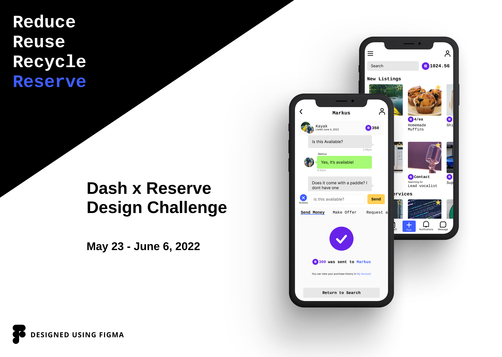
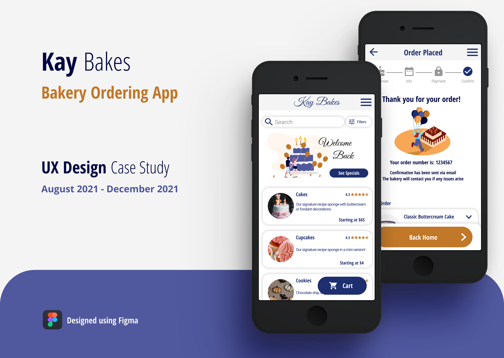

Work

UX/UI Design

UX/UI Design


I graduated in 2018 with an Aboriginal Visual Arts Diploma in Porcupine Quillwork from the New Brunswick College of Craft and Design.
I spent 3 years at the college developing skills in drawing, colour theory, the creative process, art history, and design.
Since then I’ve worked as a product designer in an engraving shop, where I worked with clients from concept to completion, designing, engraving, and testing products.
I also worked in family services, working with Indigenous clients to create an environment for them to thrive.
When I began learning UX design and code, it felt like the different paths I had been on had come together in beautiful harmony!
In my own time I volunteer with Cystic Fibrosis Canada planning and executing events, pre-COVID I was a clinic instructor at the Running Room to encourage long lasting health and fitness goals.
I completed my first marathon in May 2020 with a group of 6, one being my dad!
When not on the running track, you can catch me on the race track dodging pylons... ok hitting pylons.